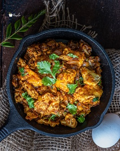

Egg Bhurji Masala

Ingredients
- 2 Large Onions Finely Chopped
- 3 Green chilliesFinely Chopped
- Few Curry leaves Optional
- 1/2 tsp Turmeric Powder
- 1 1/2 tsp Red Chilli Powder Adjust to taste
- 1/2 Cup Water
- Salt to taste
- 3 Medium Eggs
- A little Fresh Coriander For garnish
Steps
- To a moderately hot pan, add in some oil. To this add finely chopped onions and green chillies. Sauté until the onions turn slightly soft and brown.
- Now, add in some turmeric powder, red chilli powder, and a few curry leaves.
- Give it all a nice mix and add in half a cup of water and enough salt for seasoning.
- Let it cook for a minute. Break open 3 eggs.
- Keep the heat on medium low and just cover with a lid for about a minute.
- Now, open the lid and turn sides of the egg part.
- Close it again with lid and cook for another minute.
- Now scramble the eggs to your preference, fine, chunky, it’s up to you.
- The burji is done and ready. Turn off the heat and add in some fresh coriander.